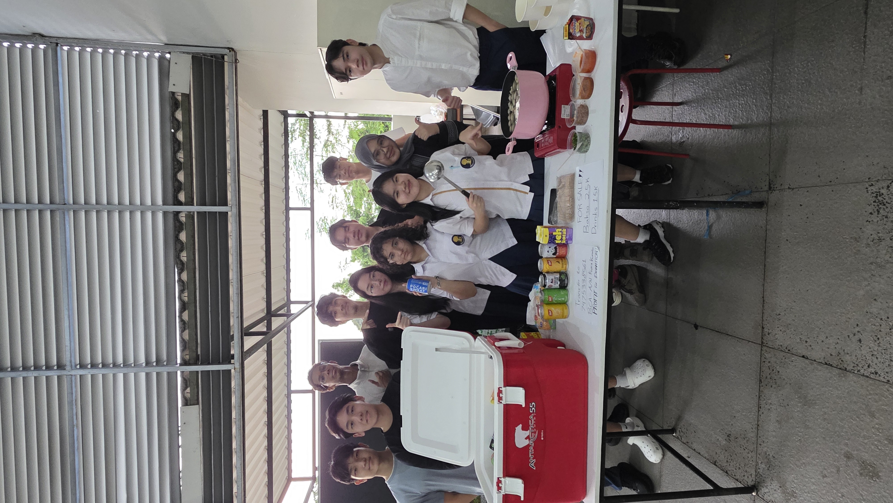

Generating essential support to fuel our educational activities and expand our environmental initiatives.

Held a fundraising event during Iftar to generate funds for Jelantah Jenius’ programs, including future UCO collection and educational activities. The funds helped support our efforts to promote responsible used cooking oil (UCO) management and expand our environmental initiatives.